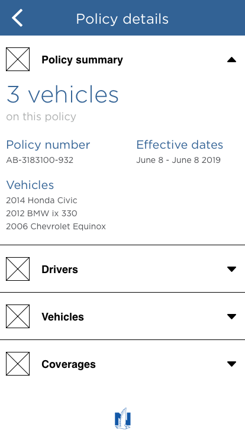
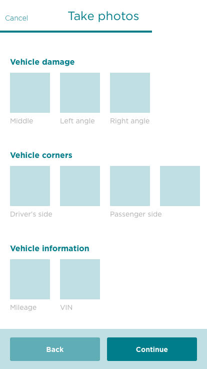

We're expanding the app
The Nationwide mobile app launched in January of 2018 and we've continued to update it with monthly releases. Since launch we've added the ability to file a claim with a few photos, enhanced the payment options we offer and added the ability to make changes to a policy.